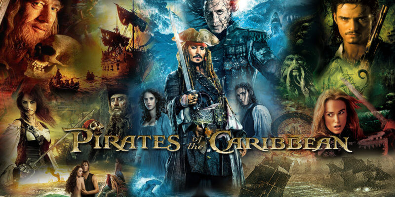
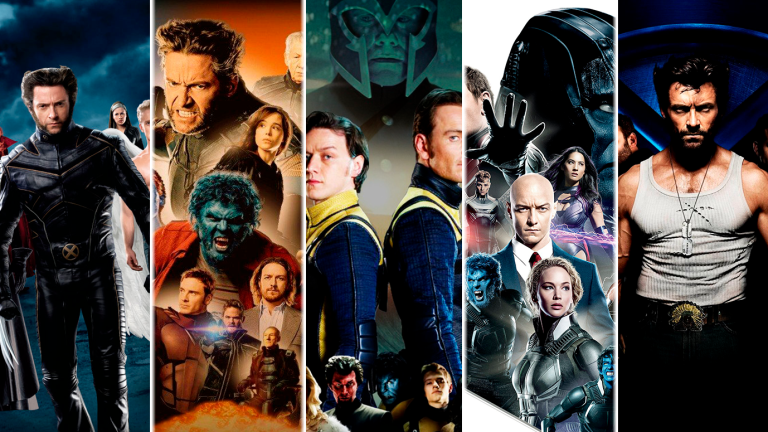
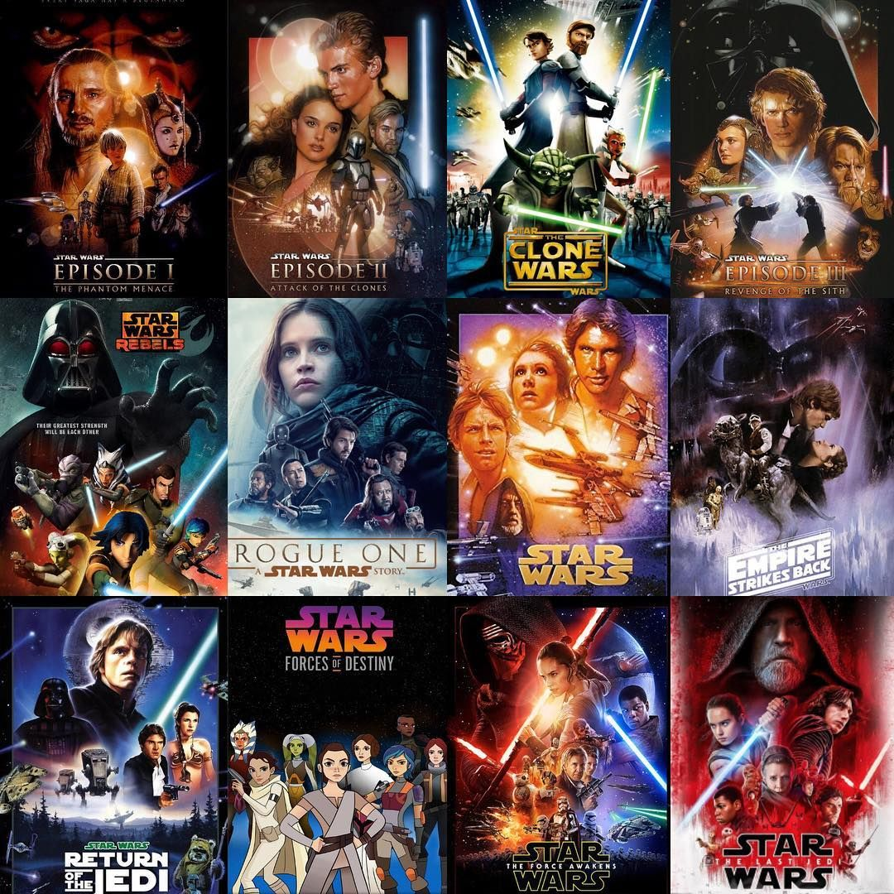

Pirates of the Caribbean is a series of fantasy swashbuckler films produced by Jerry Bruckheimer and based on Walt Disney's theme park attraction of the same name. The film series serves as a major component of the eponymous media franchise. Directors of the series include Gore Verbinski (films 1–3), Rob Marshall (4), Joachim Rønning (5–6), and Espen Sandberg (5). The series is primarily written by Ted Elliott and Terry Rossio
| Movie Name | IMDB Rating | Release Score |
|---|---|---|
| Pirates of the Caribbean: The Curse of the Black Pearl | 8.0/10 | 2003 |
| Pirates of the Caribbean: Dead Man's Cheast | 7.3/10 | 2006 |
| Pirates of the Caribbean: At World's End | 7.1/10 | 2007 |
| Pirates of the Caribbean: On Stranger Tides | 6.6/10 | 2011 |
| Pirates of the Caribbean: Salazar's Revenge | 6.5/10 | 2017 |
X-Men is an American superhero film series based on the fictional superhero team of the same name, who originally appeared in a series of comic books created by Stan Lee and Jack Kirby and published by Marvel Comics.
| Movie Name | IMDB Rating | Release Score |
|---|---|---|
| X-Men | 7.3/10 | 2000 |
| X-Men 2 | 7.2/10 | 2003 |
| X-Men : The Last Stand | 6.6/10 | 2006 |
| X-Men Origins : Wolverine | 6.5/10 | 2009 |
| X-Men : First Class | 7.7/10 | 2011 |
| The Wolverine | 6.7/10 | 2013 |
| X-Men : Days of Future Past | 8.0/10 | 2014 |
| Deadpool | 8.0/10 | 2016 |
| X-Men : Apocalypse | 6.9/10 | 2016 |
| Logan | 8.1/10 | 2017 |
| Deadpool 2 | 7.7/10 | 2018 |
| X-Men : Dark Phoenix | 5.7/10 | 2019 |
| The New Mutants | 5.3/10 | 2020 |
The Star Wars franchise involves multiple live-action and animated films. The film series started with a trilogy set in medias res which was later expanded to a trilogy of trilogies, known as the "Skywalker Saga".
| Movie Name | IMDB Rating | Release Score |
|---|---|---|
| Star Wars : A New Hope | 8.6/10 | 1977 |
| Star Wars : The Empire Strikes Back | 8.7/10 | 1980 |
| Star Wars : Return of the Jedi | 8.3/10 | 1983 |
| Star Wars: The Phantom Menace | 6.5/10 | 1999 |
| Star Wars: Attack of the Clones | 6.6/10 | 2002 |
| Star Wars: Revenge of the Sith | 7.6/10 | 2005 |
| Star Wars: The Force Awakens | 7.8/10 | 2015 |
| Star Wars: The Last Jedi | 6.9/10 | 2017 |
| Star Wars: The Rise of Skywalker | 6.5/10 | 2019 |